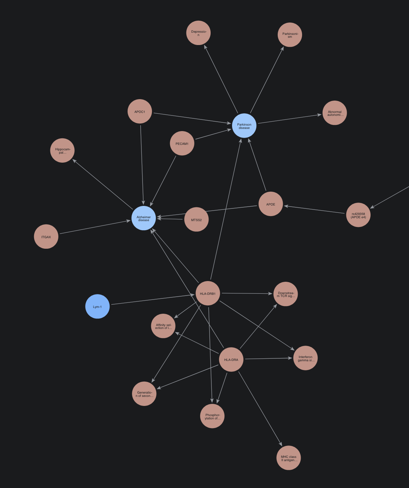

Deliverable: 2
Status: In progress
Genomics and Precision Medicine
A student report on drug response, genetic risk and connected evidence for Alzheimer's disease
Summary of findings
- ClinVar lists 80 CYP2C19 variants, and none is labelled pathogenic: its broken alleles are filed as "drug response", and two are common (*2 at 16.8%, *17 at 20.0%). Sec 1
- I calibrated CADD into evidence bands with labelled variants pooled from DPYD, then tested the bands on CYP2C19's own known no-function alleles. Fig 1
- The bands put *2 and *4 in the "strong, benign" band, so they can't be trusted for this gene, and no uncertain variant was reclassified (33 → 33). Fig 1
- A published Alzheimer's risk score works best in Europeans (AUC 0.672) and is at chance in the African-ancestry group (0.493) in the course's simulated data; without its two APOE SNPs every group sits near 0.58. Fig 2
- A Neo4j knowledge graph of my genes ranks PECAM1, APOC1, ITGAX, HLA-DRB1 and APOE on top, and finds real drugs on APOB and APLNR and a route from HLA-DRB1 to Parkinson's. Fig 3
1 · Pharmacogenomics: CYP2C19 Module 5 · report PDF · folder ↗
Can variant-effect scores classify CYP2C19's uncertain variants?
Method
I fetched ClinVar labels with CADD, REVEL, AlphaMissense and gnomAD frequencies, calibrated CADD against known labels, and tried to reclassify the variants of uncertain significance (VUS).
Results
| Measure | Value | Note | |
|---|---|---|---|
| ClinVar variants | 80 | 64 distinct rsIDs | |
| Labelled pathogenic | 0 | broken alleles are filed as "drug response" (37) | L |
| *2 allele frequency | 16.8% | no-function allele, common | |
| CADD for *2 / *4 | 5.7 / 15.9 | both fall in the "strong, benign" band | ! |
| VUS before → after | 33 → 33 | none reclassified |

2 · Polygenic risk across ancestries Module 6 · report PDF · folder ↗
Does an Alzheimer's risk score work equally well across ancestries?
Method
I applied a published 22-SNP Alzheimer's score (PGS000334), which includes APOE, to 2,336 real genomes from five ancestry groups, then measured how well it separates cases from controls in each group.
Results
| Ancestry | n | AUC | AUC without APOE | Above pooled top-10% cutoff |
|---|---|---|---|---|
| European (EUR) | 500 | 0.672 | 0.588 | 7.8% |
| South Asian (SAS) | 489 | 0.611 | 0.582 | 4.3% |
| East Asian (EAS) | 500 | 0.575 | 0.588 | 2.2% L |
| Admixed American (AMR) | 347 | 0.555 | 0.557 | 6.3% |
| African (AFR) | 500 | 0.493 L | 0.580 | 28.0% H |
Reference: AUC 0.5 is chance. The pooled cutoff flags 10% of everyone combined. Cross-validated AUC: age alone 0.562, age plus score 0.618.

3 · Knowledge graph Module 7 · report PDF · folder ↗
Once my Alzheimer's evidence is connected in one graph, which genes stand out, and what does the graph add?
Method
I loaded my 15 Alzheimer's genes, with their Modules 2–4 evidence, into a Neo4j database. Around them I added Reactome pathways, drugs, related diseases and HPO symptoms from the Open Targets Platform, and 200 patients from the Module 6 cohort. I queried the graph in Cypher and ranked the genes by fusing PageRank with my own scores.
Results
| Measure | Value | Note |
|---|---|---|
| Nodes / relationships | 415 / 329 | 15 genes, 50 pathways, 5 drugs, 3 diseases, 140 symptoms, 2 variants, 200 patients |
| Related diseases found | 2 | Parkinson disease (4 of my genes), schizophrenia (3) |
| Drugs acting on my genes | 5 | mipomersen (APOB, approved), apelin (APLNR, phase 2), three on HLA-DRB1 |
| Pathways shared by 2+ of my genes | 25 | lipid transport, MHC class II, integrin and vascular-wall interactions |
| # | Gene | PageRank | Module 2 score | Druggability | Open Targets AD | Fused |
|---|---|---|---|---|---|---|
| 1 | PECAM1 | 0.015 | 0.939 | 0.88 | 0.37 | 0.83 |
| 2 | APOC1 | 0.010 | 0.949 | 0.25 | 0.57 | 0.73 |
| 3 | ITGAX | 0.011 | 0.912 | 0.59 | 0.23 | 0.68 |
| 4 | HLA-DRB1 | 0.021 | 0.955 | 0.27 | 0.08 | 0.65 |
| 5 | APOE | 0.028 | 0.902 | 0.02 | 0.79 | 0.61 |
Fused score: mean of the four percentile ranks. Four of these five genes are on my Portfolio 1 shortlist.

| APOE genotype | People | Case rate | Mean risk-score percentile |
|---|---|---|---|
| e4/e4 | 5 | 40% | 99 |
| e3/e4 | 50 | 42% | 86 |
| e3/e3 | 122 | 23% | 41 |
| e2/e3 | 20 | 40% | 14 |
Patient stratification in Cypher (the course's simulated case labels; e2/e4, 3 people, not shown).